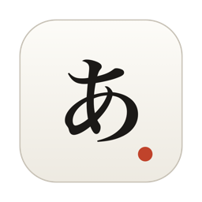

打ち間違えない役者。
文字を打つ場面を撮るための macOS 用エディタです。打たせたい内容を台本に書いて再生すると、本物の日本語入力を通してそのとおりにタイプします。このページはその使い方をひととおり説明するマニュアルです。
映像のなかに、誰かが文字を打っている画面が必要になることがあります。製品のデモ、操作を説明するチュートリアル、劇中でノートパソコンに向かう一場面。
いざ撮ろうとすると、これが厄介です。打ち間違える。変換が思ったところで確定しない。緊張して指が止まる。AWriter は、その一点のためだけに作った macOS 用エディタです。書くための道具ではありません。
アクセシビリティの許可は要りません。AWriter は自分自身のイベントキューにキーイベントを送っているだけで、他のアプリを操作することはできません。
配布は GitHub Releases です。Developer ID で署名し、Apple の公証を通してあるので、ダウンロードしたものをそのまま開けます。右クリックから開くような回避操作は要りません。
AWriter-バージョン.dmg をダウンロードします。録画機能を初めて使うときだけ、macOS が「画面収録」の許可を求めます。
許可したあとは AWriter を一度終了して、起動し直してください。許可はプロセスの起動時に読まれるため、許可した直後のプロセスには反映されません。未許可のまま録画しようとすると、システム設定の該当ペインを開く案内が出ます。
ウィンドウは二つだけです。撮影に映るのは書類ウィンドウ、操作するのは台本エディタ、という役割分担になっています。
| 1 | タイトルバー。名前は台本エディタの「ウィンドウ名」で決めます。空にすれば何も出ません |
| 2 | 「あぁ」ボタン。フォント・文字サイズ・文字色・外観の設定がここにまとまっています |
| 3 | 本文カラム。ウィンドウをどれだけ広げても最大 720pt で、つねに中央に置かれます |
| 4 | 変換中の下線。macOS の日本語入力が引いている本物です |
| 5 | 文字数カウンタ。書類ウィンドウの一部なので、録画にも映ります |
アプリ起動時に一緒に開きます。閉じてしまったら デモ > 台本エディタ…(⌥⌘P)で開き直せます。
| A | 再生と録画、「再生前に本文を消去」、ウィンドウ名、キー表示・録画設定、台本の読み書き |
| B | 台本のタブ。+ で追加、ダブルクリックで名前を変更、× で削除 |
| C | トークンのボタン。押すとカーソル位置に挿入されます |
| D | 台本の本文。等幅で表示され、アプリ内に自動保存されます |
| E | 記法の早見表。書き方を忘れてもここを見れば済みます |
映像に映る以上、文字そのものが商品です。設定は書類ウィンドウ右上の「あぁ」ボタンにまとまっています。項目は四つだけです。
| 項目 | 内容 |
|---|---|
| フォント | ヒラギノ明朝(既定)/ 凸版文久明朝 / 游明朝体 / ヒラギノ角ゴシック / 凸版文久ゴシック / ヒラギノ丸ゴ / 筑紫A丸ゴシック / クレー / システムフォント / New York。お使いの Mac に入っているものだけが並びます |
| 文字サイズ | 12〜36pt。行送りは 1.7 倍、段落後のアキは 0.4em で、サイズに追従します |
| 文字色 | 自動(ライト / ダークに追従)、墨・煤竹・紺青・海老茶・千歳緑・胡粉の和色、任意のカスタムカラー |
| 外観 | システム / ライト / ダーク。撮影の途中でシステム設定が切り替わって地の色が変わる事故を防げます |
文字色を「自動」以外にしたら、外観もライトかダークに固定してください。暗い地に墨色を置くと読めなくなります。
設定はアプリ内に保存され、次に起動したときも同じ状態で始まります。本文も同じように保存されるので、書きかけがそのまま残ります。
台本は押すキーをそのまま並べたものです。文章を書くのではなく、キーボードでどう打つかを書きます。ローマ字の並び、変換のためのスペース、候補の選択、確定の {enter}。ローマ字からかな、かなから漢字への変換は AWriter ではなく IME が行うので、台本には「どのキーを押したか」だけを書きます。
# 冒頭のカット(夏目漱石『草枕』)
#lead 3
#interval 100
#jitter 0.35
{kana}{wait 0.5}
yamamichiwonoborinagara,koukangaeta.{space}{enter}
{wait 0.8}
{enter}
chinihatarakebakadogatatu.{space}{enter}行頭に # で書きます。台本全体にかかる設定です。# で始まるその他の行はコメントとして無視されます。
| 書き方 | 意味 |
|---|---|
#lead 3 | 再生を押してから打ち始めるまでの秒数。カメラを回す間 |
#interval 100 | 基本のキー間隔(ミリ秒)。小さいほど速く打ちます |
#jitter 0.35 | 間隔のゆらぎ率。人間らしいリズムになります。0 で機械的に等間隔 |
#speed 1.0 | 全体の速度倍率。台本を書き直さずに尺を詰められます |
特殊なキーは波括弧で書きます。台本エディタのボタンからも挿入できます。
| トークン | 押されるキー |
|---|---|
{enter} | Return。変換の確定、または改行 |
{space} | スペース。かなの変換、候補送り |
{tab} {esc} {bs} | Tab / Escape / Delete(1 文字削除) |
{up} {down} {left} {right} | 矢印キー。候補の選択や文節の切り直しに |
{kana} {eisu} | かなキー / 英数キー。入力モードの切り替え |
{wait 0.5} | 0.5 秒待つ。間を作る |
{cmd+n} {shift+enter} {cmd+shift+z} | 修飾キーの組み合わせ。cmd shift ctrl opt を + でつなぎます |
yama と書けば y・a・m・a の 4 打です{enter} と明示します{kana} を送って入力モードを確実にしておきます{down} で送る、数字キーで選ぶ、いずれも書けます台本はアプリ内に自動保存されます。保存の操作は要りません。タブで何本でも持てるので、シーンごと、言語ごと、尺の長短ごとに用意しておいて、撮影の場で切り替えられます。
+ で追加、ダブルクリックまたは右クリック > 名前を変更でリネーム、× で削除、右クリック > 複製.keys ファイルを新しいタブとして読み込みます.keys に書き出します。ファイル操作は保存のためではなく、受け渡しのためのものです#lead の秒数だけカウントダウンしてから打ち始めます。| ESC | いちばん確実。再生中に効く唯一のキーです |
| 停止ボタン | 台本エディタの赤いバナー、またはフローティング HUD |
| ⌥⌘. | メニューの デモ > 停止 |
途中で止めると、未確定の変換中テキストは破棄されます。
再生中であることが一目で分かるよう、次の表示が出ます。
チュートリアルを撮るときは、押されたキーを画面に重ねて表示できます。⇧↩ のように修飾キーまで出るので、見ている人に操作が伝わります。既定はオフです。設定は台本エディタの「キー表示」ボタンから。
| 項目 | 内容 |
|---|---|
| 表示するキー | すべてのキー(連続するローマ字はひと続きの札にまとまります)/ 特殊キーのみ(修飾キー付きの操作と特殊キーだけ) |
| 位置 | カーソル位置 / 左下 / 下中央 / 右下 / 上中央 |
| 大きさ | 14〜44pt |
| 残す時間 | 0.5〜5 秒 |
「カーソル位置」を選ぶと、札が挿入点のすぐ下に付いて動きます。端では自動的に内側へ寄り、下に入らなければ上に回ります。打つ・変換する・確定する、という流れがそのまま読み取れます。
台本の合成キーも手打ちも同じ経路を通るので、自動再生でも手で打っても同じように表示されます。札は書類ウィンドウの一部なので、録画にもそのまま映ります。
台本エディタの「録画して再生」を押すと、書類ウィンドウを録画しながらデモを再生します。再生が終わると録画も自動で止まり、トリミング画面が開きます。外部の画面収録アプリは要りません。
「録画設定」から、書類ウィンドウを背景の上に余白付きで浮かせて録画できます。このページの冒頭の映像がその絵です。
録画が終わると自動でトリミング画面が開きます。
録画中は macOS がタイトルバーに画面共有のインジケータを出します。書類ウィンドウを切り出して録るので、これも一緒に映ります(冒頭の映像の左上に写っている小さなピルがそれです)。気になる場合は、書き出したあとに動画編集で上端を切ってください。
{space} の追加や {down})を台本に足すか、一度手で正しく変換して IME に覚えさせます{wait} で作れます。台詞に合わせて止める、考えるふりをする、といった芝居も台本の側で決められます| キー | はたらき |
|---|---|
| ⌥⌘P | 台本エディタを開く(デモ > 台本エディタ…) |
| ESC | 再生を止める |
| ⌥⌘. | 再生を止める(デモ > 停止) |
| ⌥⌘R | 録画だけ止める(デモ > 録画停止) |
| ⌘Z | 「再生前に本文を消去」で消えた本文を戻す |
画面収録の許可は、プロセスの起動時に読まれます。許可したあとに AWriter を一度終了して起動し直してください。
変換しているのは macOS の日本語入力なので、その学習状態がそのまま出ます。リハーサル再生で確認し、候補選択のキーを台本に足すか、手で一度正しく変換して覚えさせてください。ライブ変換はオフを推奨します。
入力モードが英数になっています。台本の先頭や、モードが変わりうる箇所で {kana} を送ってください。
他のアプリにフォーカスが移った可能性があります。再生中は AWriter を前面のままにしてください。
デモ > 台本エディタ…(⌥⌘P)、またはウィンドウメニューから開き直せます。台本は自動保存されているので消えていません。
台本エディタの「再生中の表示を最前面に」をオフにしてください。なお HUD は書類ウィンドウの録画には映りません。
エクスポート… で .keys に書き出し、向こうで インポート… します。